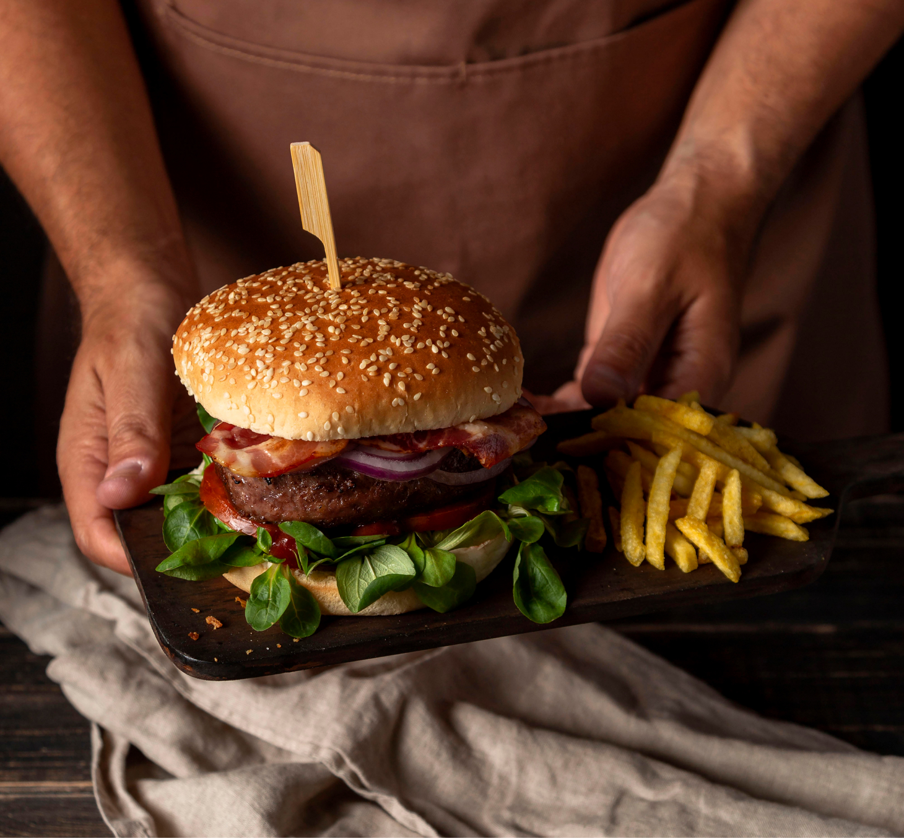

A hamburgueria Css Burguer foi criada em 2020 na disciplina de desenvolvimento Web para Dispositivos Móveis,então trouxemos uma experiência única de sensações e linhas de código. Um hambúrguer é um sanduíche que consiste em um ou mais hambúrgueres cozidos de carne moída, geralmente carne bovina, colocados dentro de um pão ou pão fatiado. O hambúrguer pode ser frito, grelhado, defumado ou grelhado.
